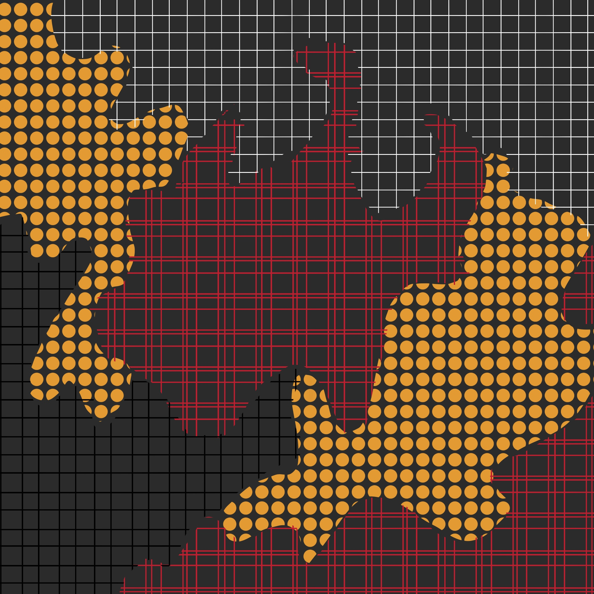

02. Useful
Good design is…
Source = Kimaya Sarin
Makes a product useful. A product is bought to be used. It has to satisfy not only functional, but also psychological and aesthetic criteria. Good design emphasizes the usefulness of a product whilst disregarding anything that could detract from it.